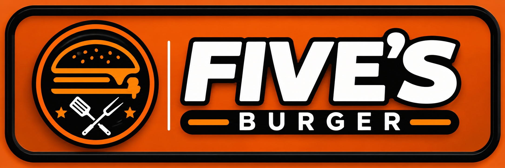
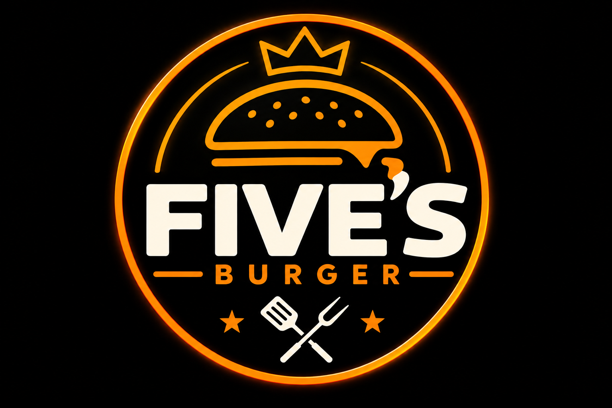

QUALIDADE
Cuidado em cada detalhe
Do preparo à apresentação, valorizamos uma experiência feita com atenção e dedicação.
Mais do que preparar hambúrgueres, a Five's Burger busca transformar cada pedido em uma experiência marcante, unindo sabor, cuidado e personalidade em cada detalhe.
Conheça nossa história ↓
A Five's Burger nasceu com uma proposta clara: oferecer hambúrgueres saborosos, com identidade e atenção aos detalhes. A ideia é valorizar aquilo que realmente faz diferença em uma boa experiência: um produto bem preparado e um atendimento que faça o cliente se sentir bem-vindo.
Cada elemento da Five's Burger foi pensado para transmitir uma personalidade marcante, desde a identidade visual até a forma de apresentar nossos produtos.

Uma experiência marcante é construída nos detalhes. Por isso, nossos valores fazem parte de tudo o que buscamos entregar.
Do preparo à apresentação, valorizamos uma experiência feita com atenção e dedicação.
Buscamos uma combinação equilibrada e saborosa para fazer cada mordida valer a pena.
Queremos que a visita à Five's Burger seja mais do que uma refeição: seja um momento gostoso.
Nossa identidade une o clássico do burger com uma presença visual forte, moderna e autêntica.
Queremos entregar mais do que um produto. Nossa missão é proporcionar uma experiência saborosa, acolhedora e consistente, capaz de transformar uma refeição comum em um momento que dê vontade de repetir.
Uma boa experiência começa pelo sabor, mas fica na memória pelos detalhes.
Em um mercado cheio de opções, acreditamos que ter identidade é essencial. A Five's Burger busca construir sua própria experiência, combinando uma comunicação visual marcante com produtos pensados para quem valoriza um bom burger.
Conheça o cardápio →